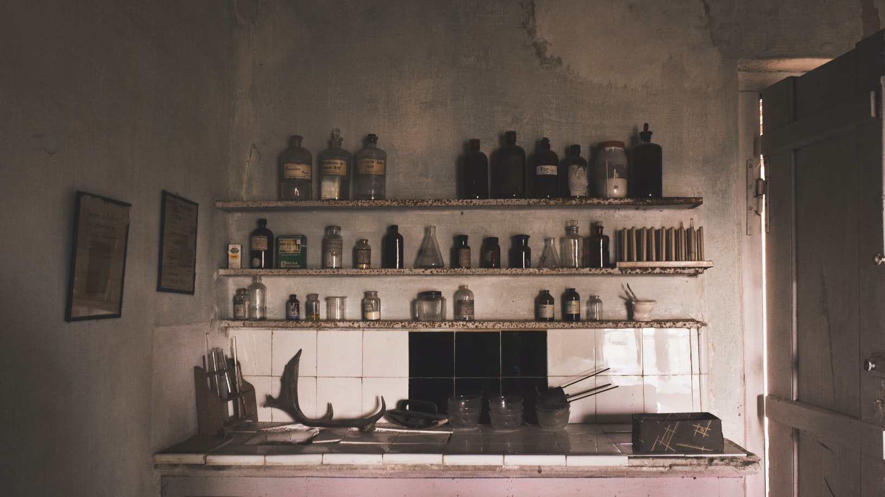

Musical
프랑켄슈타인
레베카
지킬앤하이드
프랑켄슈타인
"신을 믿어
지독
하게. 하지만 그건 축복을 통해서가 아니라
저주
를 통해서지. 만약
신이 없다면 누가 이 세상을 이런 지옥을 만들 수 있었을까?
"
기본정보
프랑켄슈타인 
개요
뮤지컬 > 창작뮤지컬 175분
기간
2021.11.24. (수)~2022.02.20. (일)
시간
화, 목 19:30
수, 금 14:30, 19:30펼쳐보기
장소
루스퀘어 신한카드홀 좌석배치도